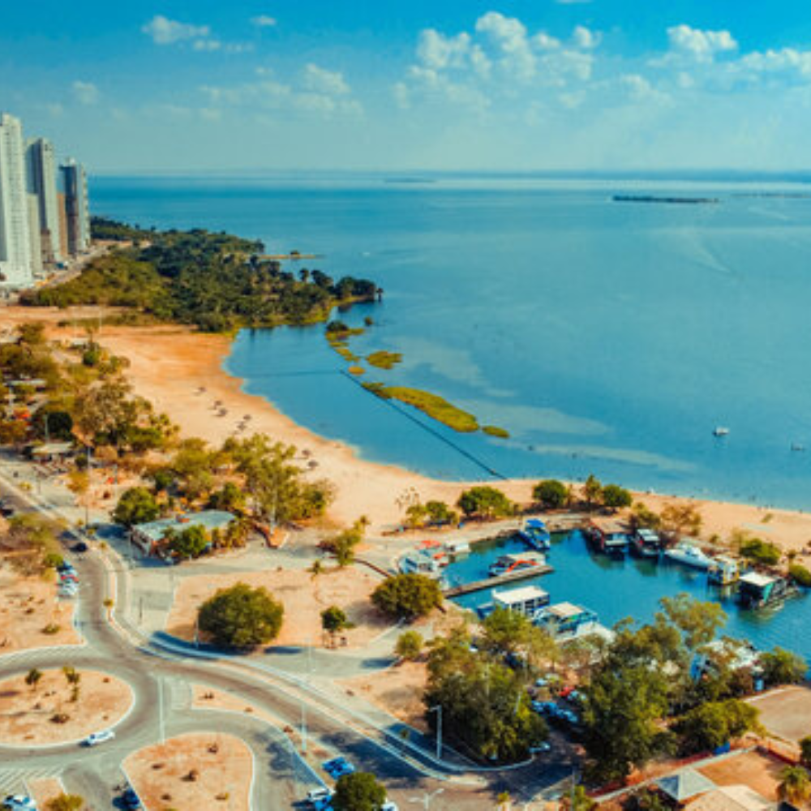

# Tocantins: o mais novo estado do Brasil O Tocantins é o estado mais novo do Brasil, criado oficialmente pela Constituição de 1988. Localizado na região Norte do país, ele faz divisa com estados como Goiás, Maranhão, Pará e Bahia. Sua capital é Palmas, uma cidade planejada que foi construída para ser o centro administrativo e econômico do estado. O Tocantins possui grande riqueza natural, com destaque para o cerrado brasileiro, considerado um dos biomas mais importantes do mundo pela sua biodiversidade. O estado também abriga rios importantes, como o Rio Tocantins e o Rio Araguaia, que contribuem para a pesca, o turismo e a geração de energia elétrica. A economia tocantinense é baseada principalmente na agropecuária. A produção de soja, milho e arroz tem grande importância para o desenvolvimento econômico da região. Além disso, a criação de gado bovino é uma atividade bastante forte no estado. Nos últimos anos, o Tocantins também tem investido no turismo ecológico, atraindo visitantes interessados em paisagens naturais, cachoeiras e praias de água doce. Entre os principais pontos turísticos do estado estão o Parque Estadual do Jalapão, famoso por suas dunas, fervedouros e cachoeiras, e a Ilha do Bananal, considerada a maior ilha fluvial do mundo. Essas atrações mostram a beleza natural e a importância ambiental da região. A cultura do Tocantins é marcada pela influência indígena, sertaneja e nortista. Festas populares, danças típicas e comidas regionais fazem parte da identidade cultural do estado. Assim, o Tocantins se destaca não apenas por sua natureza exuberante, mas também pela diversidade cultural e pelo potencial de crescimento econômico.
